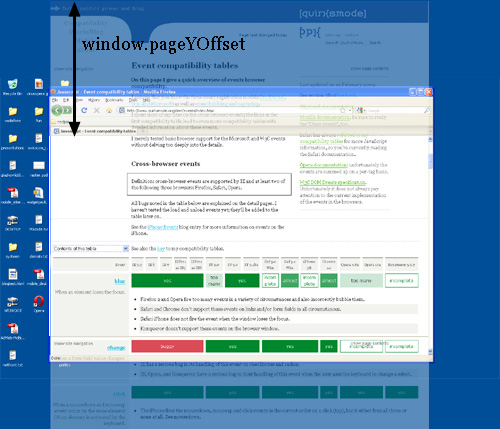

1、屏幕的宽高信息screen.width和screen.height是只跟用户当前使用的电脑屏幕有关系;跟浏览器没有关系,无论浏览器怎么进行大小放缩都无法改变screen的尺寸信息.

2、我们感兴趣的是浏览器窗口的内部尺寸window.innerWidth和window.innerHeight。这是用户当前css层可用的实际空间，分别是 window.innerWidth 和 window.innerHeight。
当用户改变浏览器尺寸的时候,这个两个值的变化的.可以分别在改变浏览器尺寸前后,获取验证异同。
另外window还有outerWidth和outerHeight。outer的值是浏览器所占用的最外部的宽和高;inner仅仅是可以显示内容的区域(不包括菜单栏,状态栏等;但包括滚动条.)

3、当浏览器出现滚动条后,我们滑动滚动条的时候,就会产生X和Y方向的位移，这两个值分别为window.pageXOffset、window.pageYOffset;

4、document.documentElement.clientWidth 和 document.documentElement.clientHeight分别表示文档的宽和高.
不包含滚动条的宽高.(window.innerWidth和window.innerHeight包含滚动条的宽高)